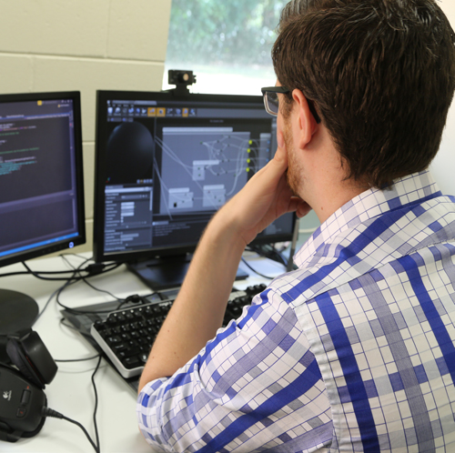

Why JCU?
Our campuses in Cairns and Townsville are in the heart of northern Queensland, adjacent to the Great Barrier Reef Marine Park, and the wet and dry tropics. JCU provides a World Heritage location unmatched by any other Australian university.
JCU takes pride in its strong student support network, small class sizes, and well-established links with the community.
All our courses offer hands-on practical experience to help make you work-ready. These include professional placements, projects and fieldwork.
Information Technology
The possibilities for Information Technology (IT) graduates are endless, offering employment opportunities worldwide. IT skills are required by every industry, and demand continues to grow. Our expert staff will teach you the skills needed to keep up with rapid developments in technology. Turn your interests into a rewarding career: design mobile applications and games, or specialise in computer science and networking.
What's new
The Internet of Things (IoT) refers to the growing network of sensors and internet-connected devices around us. In the future, we'll see the inter-connectivity of everything from urban transport to medical devices to household appliances, smart watches and other wearable technologies, home electronics and appliances, cars and heart monitoring implants.
JCU's 'Electronic Systems and Internet of Things' is an innovative program that combines traditional engineering with a high technology outlook and represents the first program of its kind in Australia.
Career opportunities
IT graduates have a wealth of career paths to choose from, both in Australia and overseas. IT skills transfer easily from one country to another, and flexible employment conditions are commonplace. Job growth in the IT industry in the five years prior to 2015 was over 13% and is predicted to remain strong.
The skills gained from the course can offer you rich career opportunities in a wide range of industries. Some of the highly valuable skills graduates can expect to obtain from our degree are:
- Programming (Python, JavaScript, Java, Swift, C#, etc.)
- Mobile applications (Android and iOS)
- Video games
- Business (marketing, management and information security)
IT graduates have high employment prospects, and can expect a starting median salary around $55,000 per annum. Examples of potential careers in the IT field may include*:
| Mobile Application Developer | $40,000 - $100,000 |
| IT/Project Manager | $65,000 - $145,000 |
| Network Administrator | $45,000 - $85,000 |
| Game Developer | $55,000 - $85,000 |
*Source: PayScale.com
Course overview
The Bachelor of Information Technology is a three year course (full time). As a part of the course, you can choose from a range of specialised minors (optional):
- Computer Science and Networking
- Human Computer Interaction and Games Design
- Internet of Things (Cairns)
- Embedded Systems (Townsville)
Extracurricular activities
JCU IT students have access to a great range of extracurricular activities to build experience and portfolios while studying. We offer software engineering projects through Club++ and the DevClub, games and interactive technology through game labs as well as robotics and embedded systems through our Robo Club. Industry internships throughout the degree in a variety of technology fields.
Course outcomes
The Bachelor of Information Technology at James Cook University has a great track record of job success. Many of our graduates have established their own IT businesses using the skills gained from the course, or have gained employment with exciting companies like:
- SafetyCulture
- Amazon.com
- Telstra
- Blizzard
- Commonwealth Bank
- Oracle
- Cairns and Townsville City Councils
- Precedence (Web Design)
- Integrated Solutions (Network Integration and IT Consultancy)
- 2Bit Studios (Games and Interactive Software)
- The Big Shots (Games and Mobile Applications)
NQ IT Industry Conference
The annual NQ IT Industry Conference is focused on getting Information Technology industry professionals together, along with students, for networking, great presentations, and discussions. The most recent conference was held in June, 2015, and preparations are currently underway for 2016.